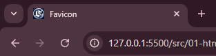
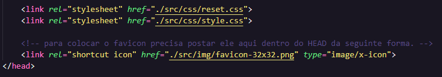

O Favicon é o icone que aparece na aba da nossa página no navegador.

Para colocar um Favicon na nossa página é bem simples. Basta criar um a partir de uma logo usando o site Favicon.io.
Depois de criar, baixar o arquivo e extrair. Vamos colocar a imagem do Favicon na nossa pasta de imagens (quando fazemos isso ele fica com simbolo de uma estrela). Após isso vamos linkar o favicon no nosso projeto assim:
